Portfolio Site
Read case study
01
3D models
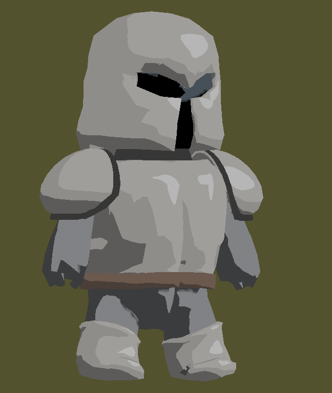
3D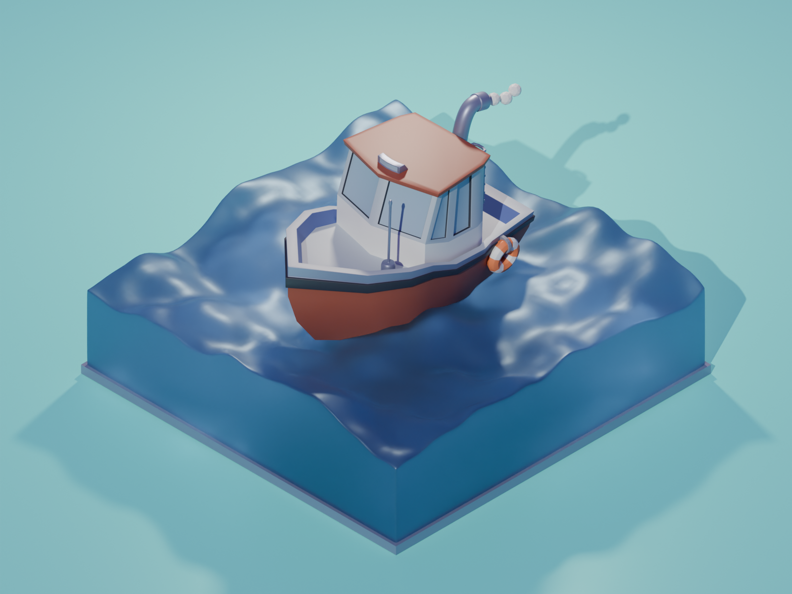
3D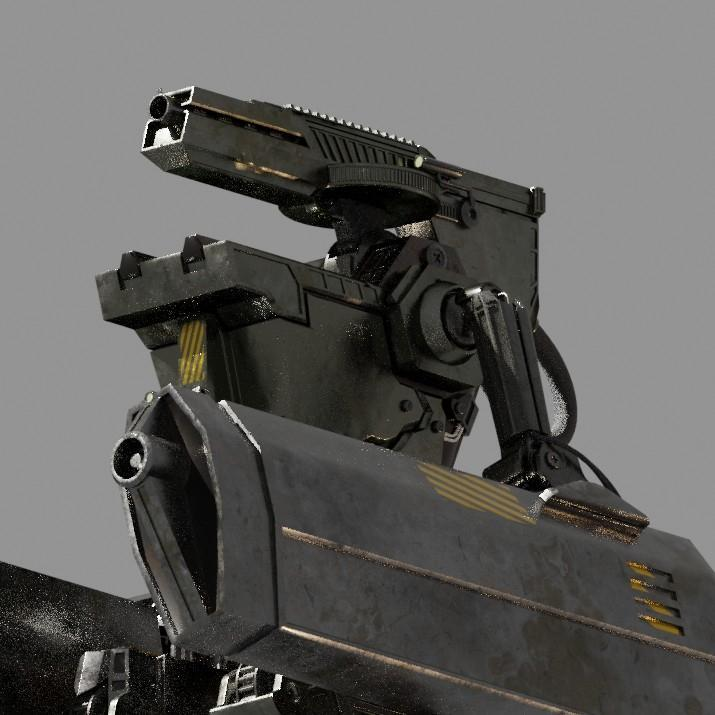
3D3D
02
UI / UX
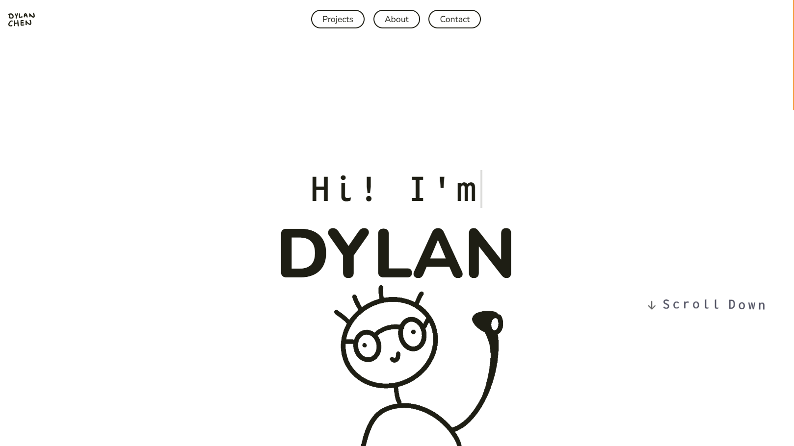
UI / UX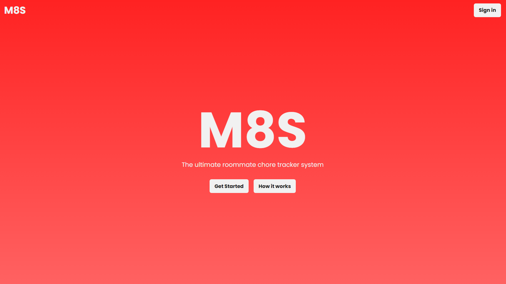
UI / UX UI / UX
UI / UX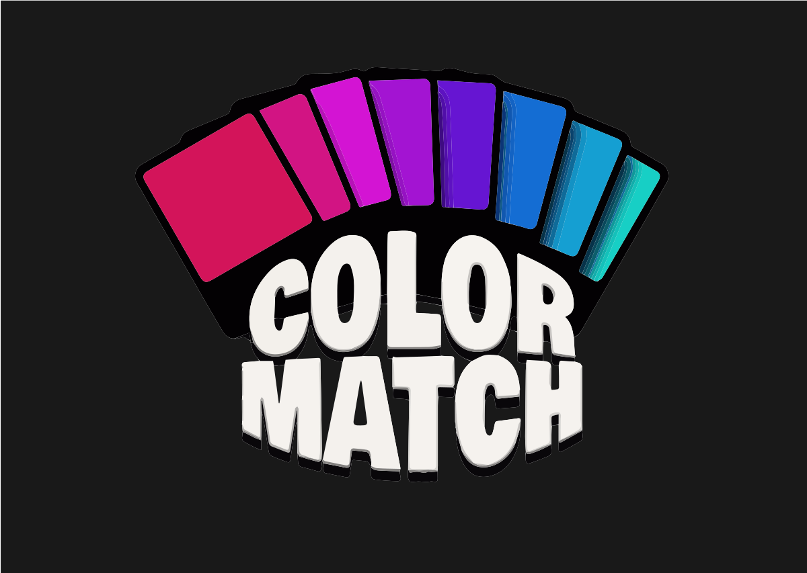
UI / UX03
2D Illustration and Graphics
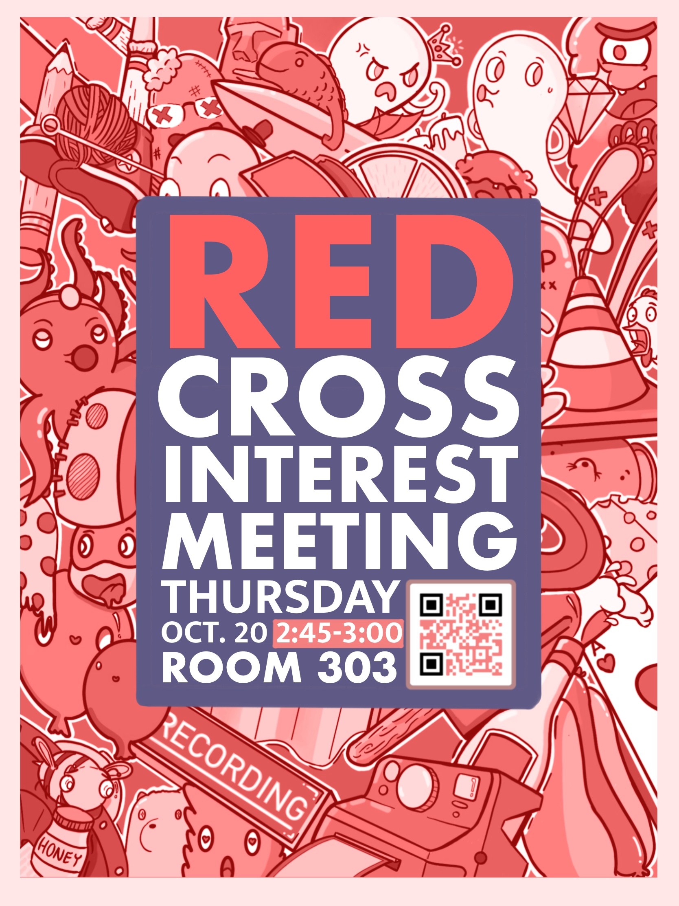
Design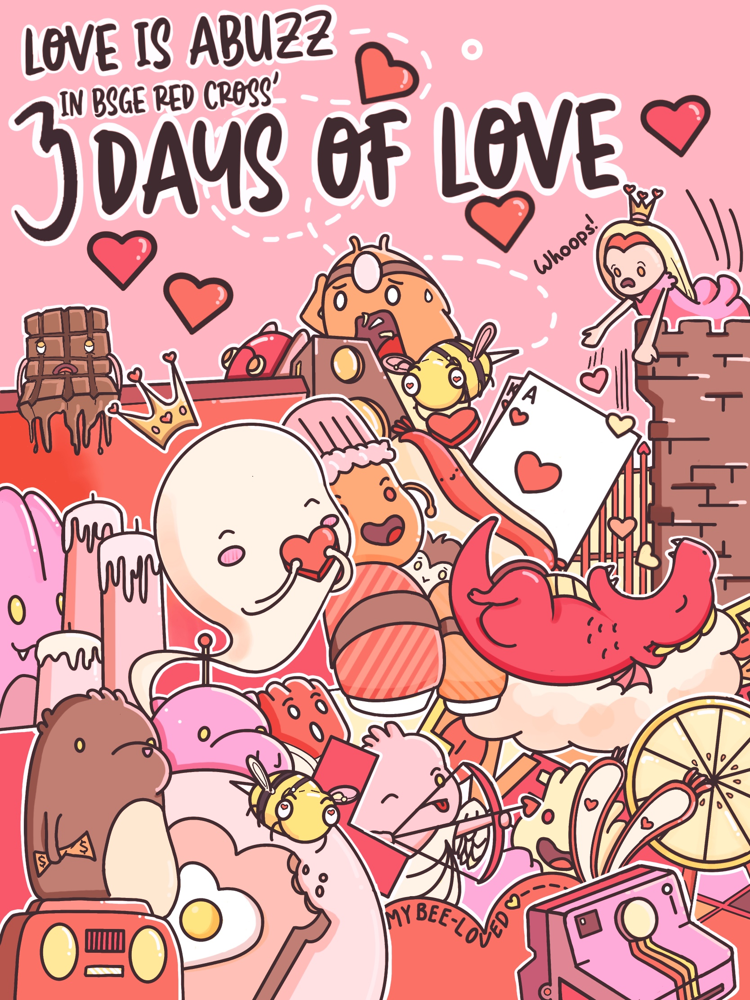
Illustration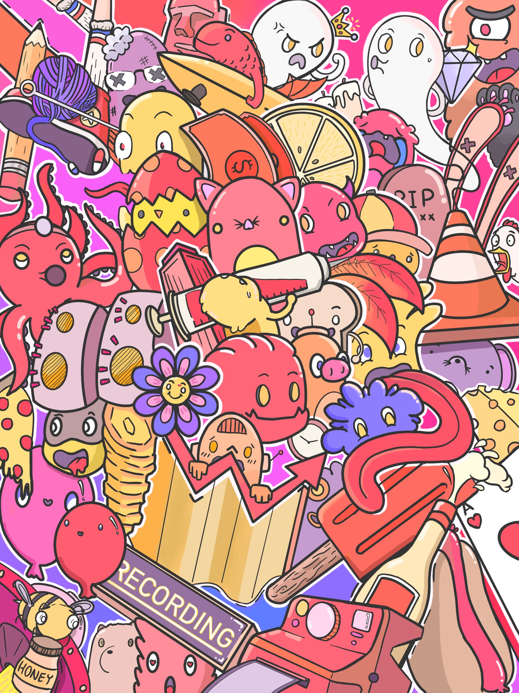
Design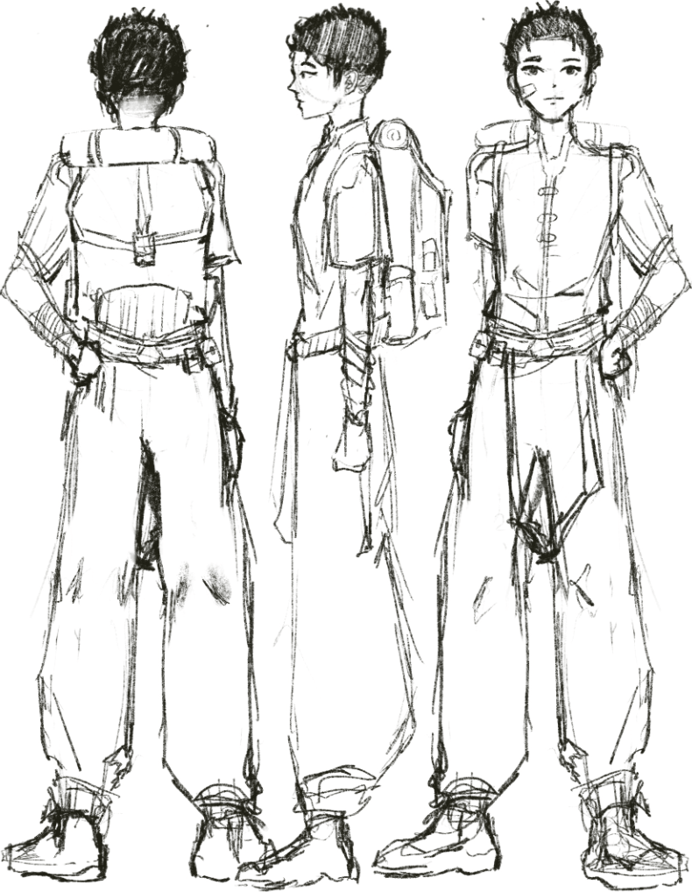
Game asset04
All work
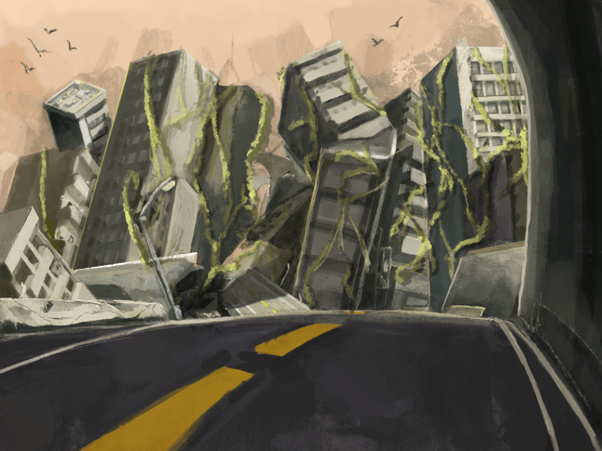
Illustration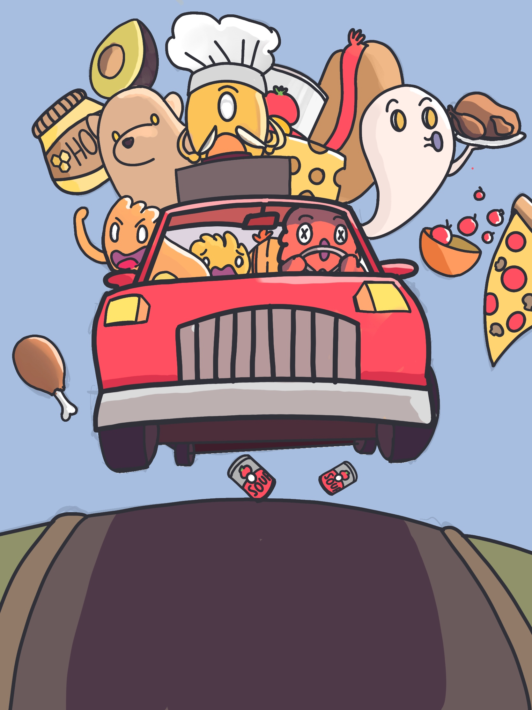
Design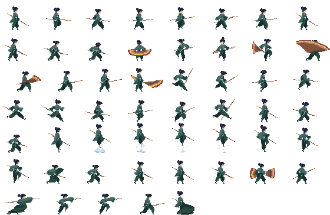
Game asset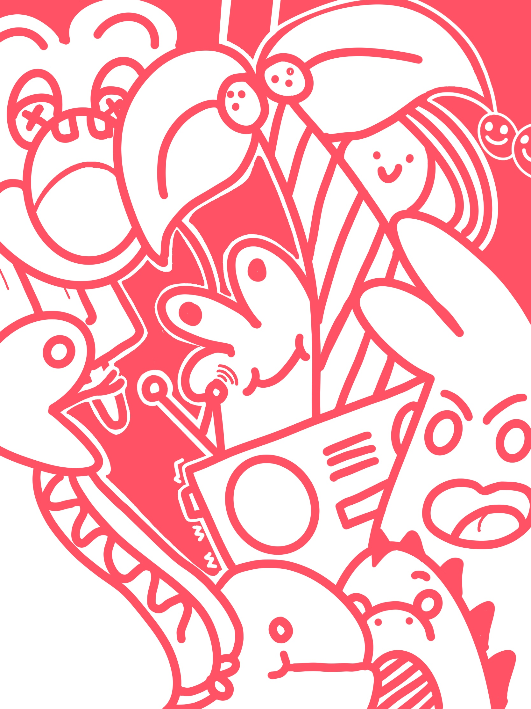
Illustration